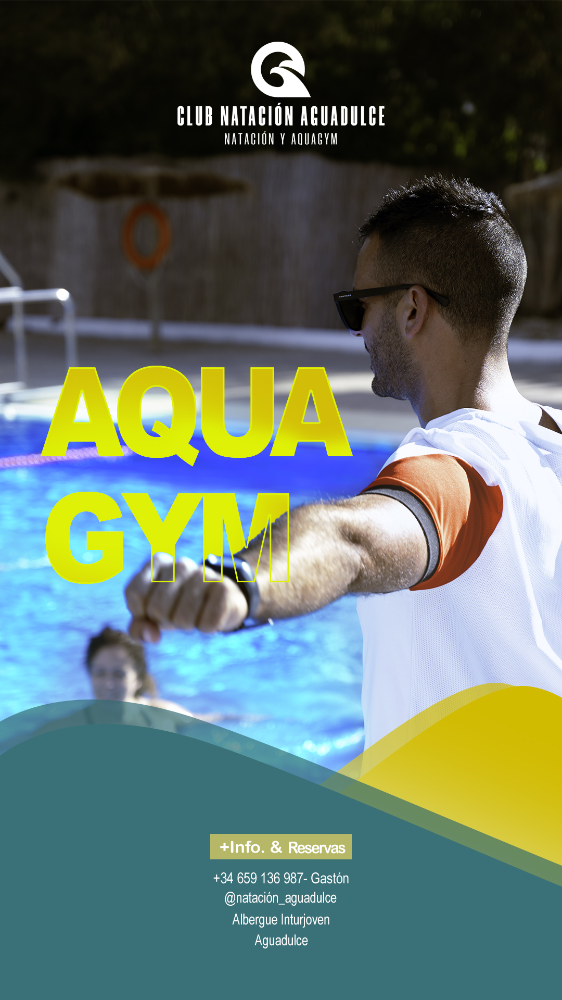
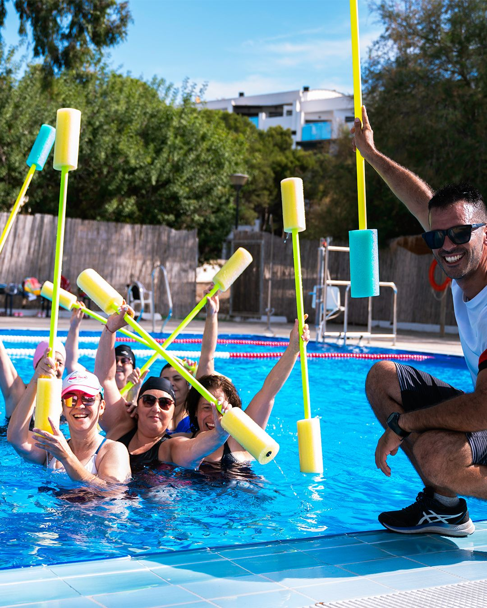
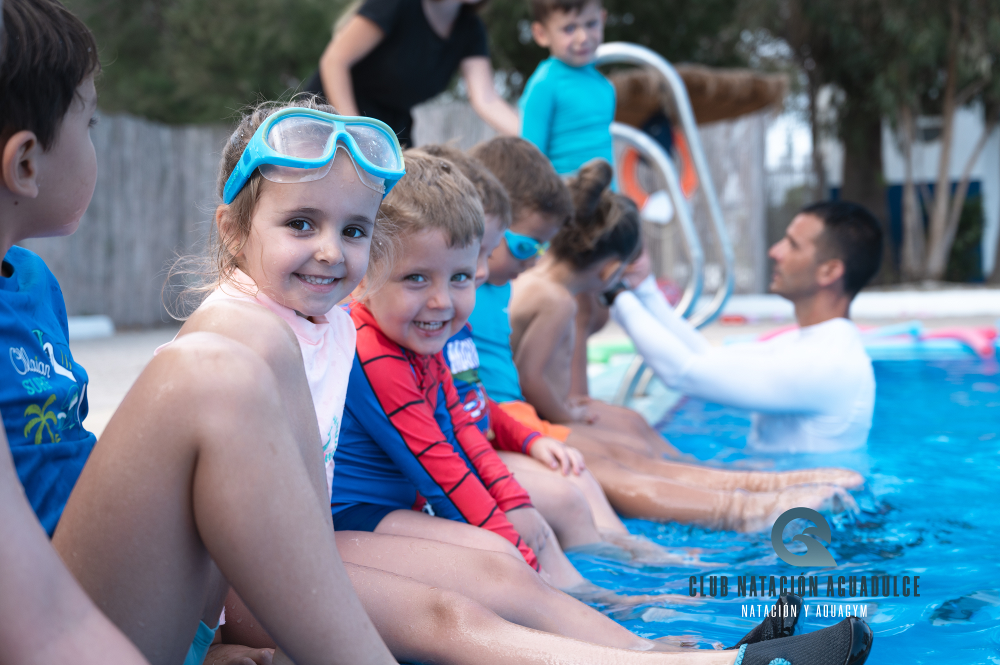
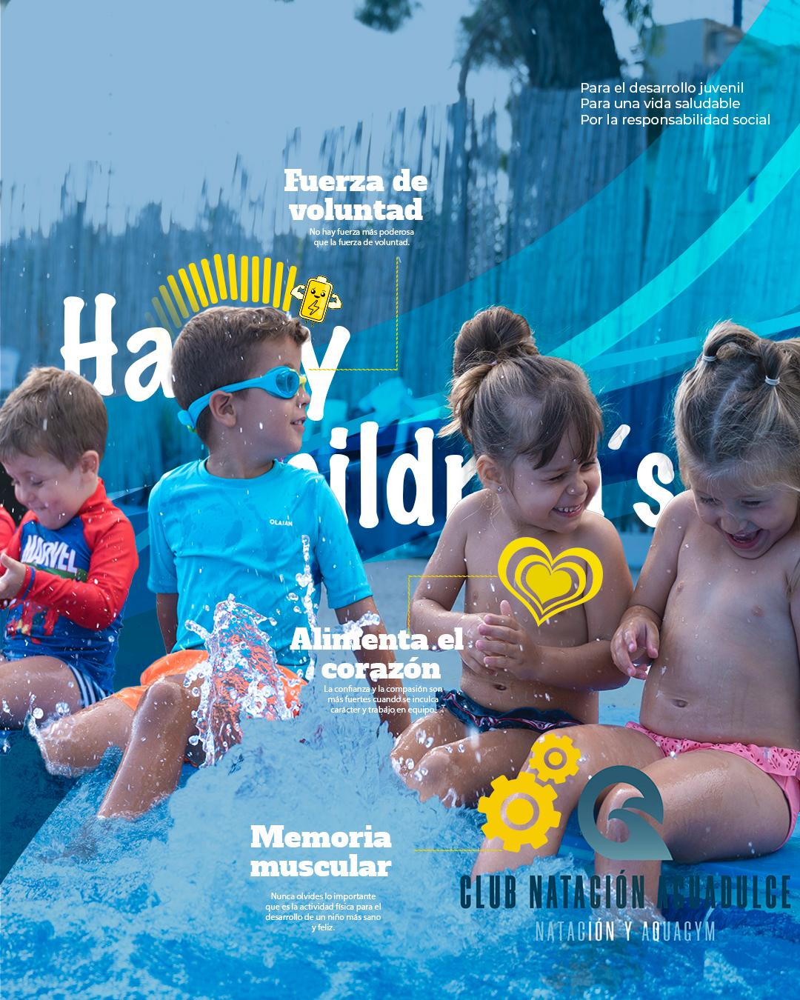
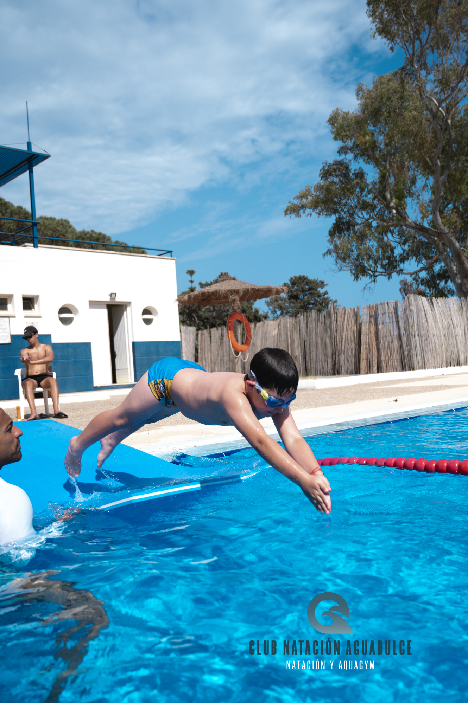

Aquagym



No necesitas saber nadar, ¡solo tener ganas
de moverte, reír y sentirte mejor!
de moverte, reír y sentirte mejor!
Matronatación


¡Esperamos ver a tu bebé disfrutar del agua con nosotros!
Natación 2025
 

¡Te esperamos para que disfrutes del agua y
comiences a nadar con nosotros!
comiences a nadar con nosotros!
Galería

Ubicación
Nuestras clases se imparten en la piscina climatizada del Hotel
Playadulce todo el año,
menos los meses de Junio, Julio y Agosto
que se realizan en el Albergue Inturjoven.
¡Ven a conocernos!
Contacto
Información de Contacto
Teléfono: +34 659 13 69 87
Email: info@profesornatacion.com
Avda del Palmeral s/n,
Aguadulce, ES 04720 (Hotel Playadulce).
Avda del Palmeral s/n,
Aguadulce, ES 04720 (Junio,Julio y Agosto)